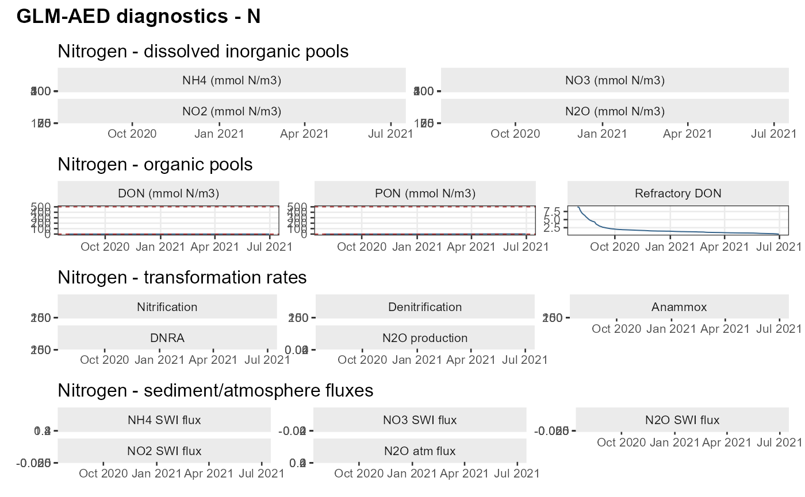
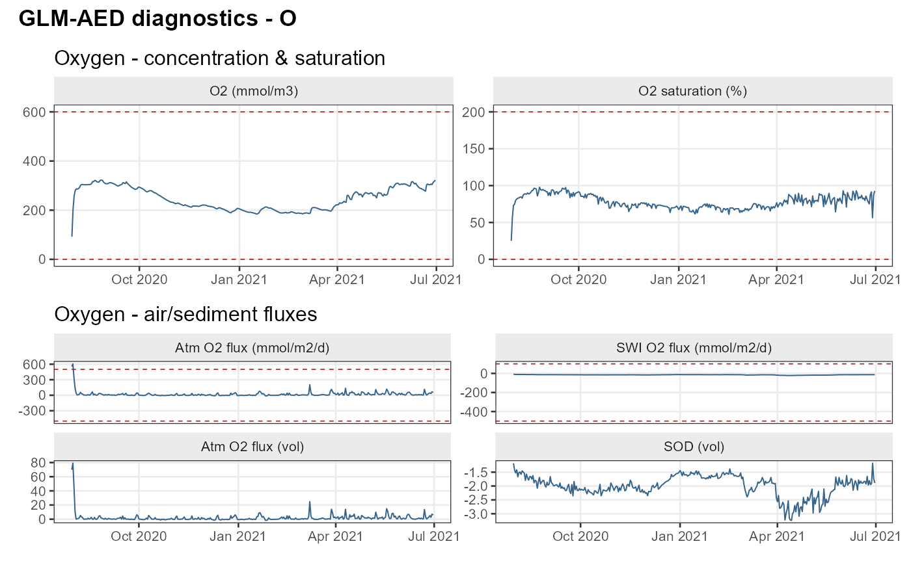
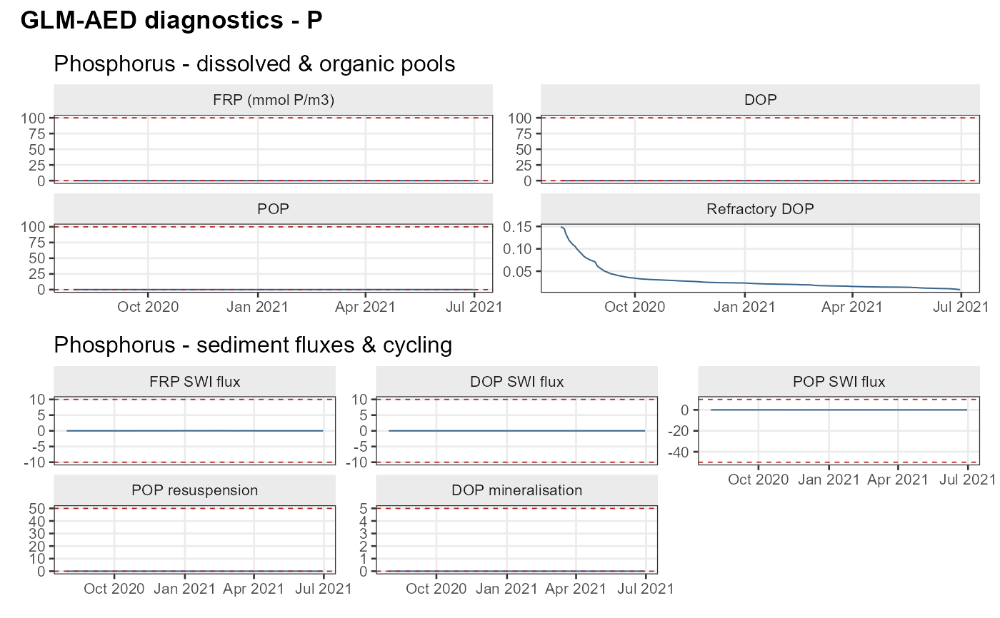
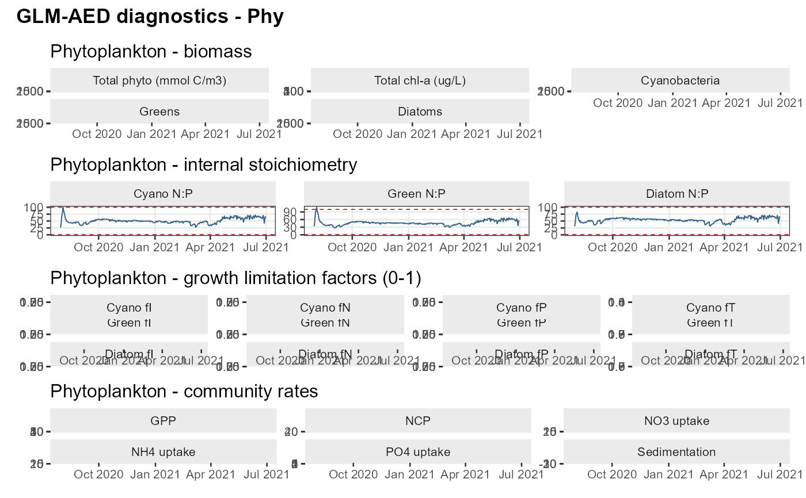
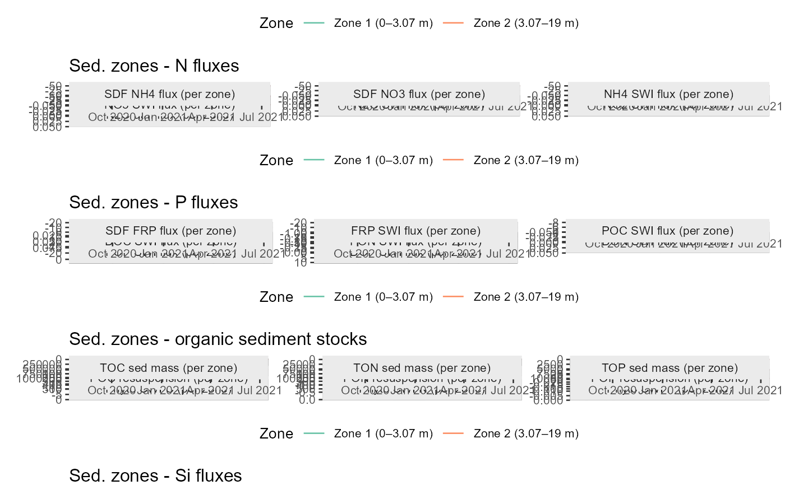

Run GLM-AED diagnostics
Usage
run_glm_aed_diagnostics(
aeme,
model,
groups = NULL,
depth_collapse = "mean",
plot = TRUE,
use_bounds = TRUE,
print_table = TRUE
)Arguments
- model
Model name. One of "gotm_wet", "glm_aed", or "dy_cd".
- groups
character vector selecting catalogue entries. Accepts:
catalogue entry names (e.g. "nitrogen_state"),
element codes ("O","N","P","Phy"),
types ("state","process"). Default NULL = all entries.
- depth_collapse
"mean", "surface" or "max" — reduce 3D variables
- plot
draw combined plots, grouped by element
- use_bounds
add dashed lines to plots showing expected bounds (from catalogue)
- print_table
print the kable summary
Examples
aeme_dir <- system.file("extdata/lake/", package = "AEME")
# Copy files from package into tempdir
path <- tempdir()
aeme <- yaml_to_aeme(path = aeme_dir, "aeme.yaml")
vars_sim <- c("HYD_strat", "HYD_temp", "HYD_thmcln", "HYD_schstb",
"CHM_oxycln", "CHM_oxynal",
"NIT_tn", "PHS_tp", "PHY_tchla")
model_controls <- get_model_controls(use_bgc = TRUE)
model_controls <- set_vars_sim(model_controls = model_controls,
vars_sim = vars_sim)
model <- c("glm_aed")
aeme <- build_aeme(path = path, aeme = aeme, model = model,
model_controls = model_controls,
ext_elev = 5, use_bgc = TRUE)
#> Warning: ! `SIL_rsi`: SIL_rsi is constant across all rows — this may be a placeholder
#> value.
#> ℹ Check raw data or unit conversion for this variable.
#> Warning: ! 1 missing state variable in `FWMT`:
#> ✖ `ZOO_zoo1 `
#> ℹ Filled 1 missing variable with default value from `model_controls`.
#> ℹ Using observed water level.
#> ! Missing values in observed water level.
#> ℹ Correcting water balance using estimated outflows (method = 2).
#> ℹ Building GLM-AED for lake wainamu
#> ℹ Copied in GLM nml file
#> ℹ Copied in AED nml file and supporting files
#> ℹ CAR_doc: 15 replaced with 41.6285
#> ℹ CAR_poc: 15 replaced with 16.6514
#> ℹ CHM_oxy: 225 replaced with 312.5
#> ℹ NIT_amm: 2.25 replaced with 1.4279
#> ℹ NIT_don: 21 replaced with 21.4183
#> ℹ NIT_nit: 6.96 replaced with 1.0709
#> ℹ NIT_pon: 19.8 replaced with 7.1394
#> ℹ PHS_dop: 0.008 replaced with 0.3229
#> ℹ PHS_frp: 0.05 replaced with 0.3229
#> ℹ PHS_pop: 0.05 replaced with 0.3229
#> ℹ PHY_cyano: 10 replaced with 0.24022
#> ℹ PHY_diatom: 8.4 replaced with 0.300275
#> ℹ PHY_green: 0.04 replaced with 0.300275
#> ℹ SIL_rsi: 100 replaced with 1
#> ✔ Updated GLM-AED models from: aed_sedflux, aed_oxygen, aed_silica,
#> aed_nitrogen, aed_phosphorus, aed_organic_matter, aed_phytoplankton,
#> aed_zooplankton, aed_macrophyte, aed_totals to: aed_sedflux, aed_oxygen,
#> aed_silica, aed_nitrogen, aed_phosphorus, aed_organic_matter,
#> aed_phytoplankton, aed_totals
#> ℹ Setting up AED aed_sed_const2d sediment zones: 2
#> ℹ Tier 2: zone-median summer concentrations used for adjustment:
#> ┌─────┬───────────┬────────────┬────────────┬────────────┐
#> │ zone│ O2 (mg/L) │ NH4 (mg/L) │ NO3 (mg/L) │ FRP (mg/L) │
#> ├─────┼───────────┼────────────┼────────────┼────────────┤
#> │Zone1│ 0.075 │ 0.078 │ 0.01 │ 0.004 │
#> │Zone2│ 7.16 │ 0.005 │ 0.001 │ 0.002 │
#> └─────┴───────────┴────────────┴────────────┴────────────┘
#> ℹ Tier 2 adjustments applied: fsed_amm (2 zones, direct NH4); fsed_frp (2
#> zones, direct FRP)
#> ── Sediment zone flux estimates (obs_adjusted) ─────────────────────────────────
#> n_zones: 2 | max lake depth: 13.07 m | ref_depth: 5 m
#> ┌────┬───────────┬───────────┬───────────┬───────────┬──────────┬─────────┬─────────┬─────┬─────┬────┬──────┐
#> │Zone│H lower (m)│H upper (m)│D upper (m)│D lower (m)│Mean D (m)│Area (m2)│Area frac│ O2 │ NH4 │ NO3│ FRP │
#> ├────┼───────────┼───────────┼───────────┼───────────┼──────────┼─────────┼─────────┼─────┼─────┼────┼──────┤
#> │ 1│ 0 │ 3.07 │ 10 │ 13.1 │ 11.5 │ 4.4e+04 │ 0.289 │-38.8│ 5.83│-0.4│ 0.103│
#> │ 2│ 3.07 │ 19 │ 0 │ 10 │ 5 │ 1.08e+05│ 0.711 │-19.4│0.512│ 0.1│0.0259│
#> └────┴───────────┴───────────┴───────────┴───────────┴──────────┴─────────┴─────────┴─────┴─────┴────┴──────┘
#>
#> ── Lake-wide area-weighted average fluxes ──────────────────────────────────────
#> ┌──────────────┬───────────────┬───────────────┬───────────────┐
#> │O2 (mmol/m2/d)│NH4 (mmol/m2/d)│NO3 (mmol/m2/d)│FRP (mmol/m2/d)│
#> ├──────────────┼───────────────┼───────────────┼───────────────┤
#> │ -25.007 │ 2.05 │ -0.044 │ 0.048 │
#> └──────────────┴───────────────┴───────────────┴───────────────┘
#> ✔ GLM nml validation completed - no issues detected.
aeme <- run_aeme(aeme)
#> ℹ Running models... (Have you tried parallelizing?) [2026-05-22 04:32:40]
#> → GLM-AED running... [2026-05-22 04:32:40]
#> ✔ GLM-AED run successful! [2026-05-22 04:32:43]
#> ✔ Model run complete! [2026-05-22 04:32:43]
out <- run_glm_aed_diagnostics(aeme = aeme)
#> Requesting 86 variables from model output... (sediment zone _Z variables are
#> optional; missing ones are skipped)
#> ── GLM-AED diagnostic summary ──────────────────────────────────────────────────
#> ! 2 flagged variables
#> ┌───────────────────┬──────────────┬───────────────────────┬─────┬──────┬────┬────┬────┬────────────┐
#> │ group │ variable │ label │ min │median│mean│ max│ sd │ flag │
#> ├───────────────────┼──────────────┼───────────────────────┼─────┼──────┼────┼────┼────┼────────────┤
#> │ oxygen_fluxes │ OXY_oxy_atm │Atm O2 flux (mmol/m2/d)│-13.5│ 6.82 │20.4│ 606│53.8│OUT OF RANGE│
#> │phyto_stoichiometry│PHY_green_NtoP│ Green N:P │ 27.2│ 46.2 │47.2│ 109│10.1│OUT OF RANGE│
#> └───────────────────┴──────────────┴───────────────────────┴─────┴──────┴────┴────┴────┴────────────┘
#> ── Full summary ────────────────────────────────────────────────────────────────
#> ┌────────────────────────┬───────────────┬───────────────────────────┬────────┬────────┬────────┬─────────┬────────┬────────────┐
#> │ group │ variable │ label │ min │ median │ mean │ max │ sd │ flag │
#> ├────────────────────────┼───────────────┼───────────────────────────┼────────┼────────┼────────┼─────────┼────────┼────────────┤
#> │ oxygen_state │ OXY_oxy │ O2 (mmol/m3) │ 92 │ 242 │ 247 │ 323 │ 45.9 │ ok │
#> │ oxygen_state │ OXY_sat │ O2 saturation (%) │ 25.1 │ 76.2 │ 78 │ 97.8 │ 9.37 │ ok │
#> │ oxygen_fluxes │ OXY_oxy_atm │ Atm O2 flux (mmol/m2/d) │ -13.5 │ 6.82 │ 20.4 │ 606 │ 53.8 │OUT OF RANGE│
#> │ oxygen_fluxes │ OXY_oxy_atmv │ Atm O2 flux (vol) │ -1.66 │ 0.524 │ 2.15 │ 79.2 │ 6.77 │ ok │
#> │ oxygen_fluxes │ OXY_oxy_dsf │ SWI O2 flux (mmol/m2/d) │ -22.3 │ -14.4 │ -14.9 │ -8.65 │ 2.36 │ ok │
#> │ oxygen_fluxes │ OXY_oxy_dsfv │ SOD (vol) │ -3.24 │ -1.96 │ -2 │ -1.17 │ 0.377 │ ok │
#> │ nitrogen_state │ NIT_amm │ NH4 (mmol N/m3) │1.19e-05│ 0.00336│ 0.0209 │ 0.0989 │ 0.0283 │ ok │
#> │ nitrogen_state │ NIT_n2o │ N2O (mmol N/m3) │ 0.0109 │ 0.0453 │ 0.216 │ 0.938 │ 0.284 │ ok │
#> │ nitrogen_state │ NIT_nit │ NO3 (mmol N/m3) │ 0.00772│ 1.19 │ 1.32 │ 2.63 │ 0.693 │ ok │
#> │ nitrogen_state │ NIT_no2 │ NO2 (mmol N/m3) │ 0 │ 0.0198 │ 0.0402 │ 0.139 │ 0.0406 │ ok │
#> │ nitrogen_organic │ OGM_don │ DON (mmol N/m3) │ 0.00484│ 0.0875 │ 0.128 │ 0.285 │ 0.076 │ ok │
#> │ nitrogen_organic │ OGM_donr │ Refractory DON │ 0.529 │ 1.31 │ 1.79 │ 8.95 │ 1.53 │ ok │
#> │ nitrogen_organic │ OGM_pon │ PON (mmol N/m3) │ 0.00273│ 0.616 │ 0.969 │ 2.61 │ 0.874 │ ok │
#> │nitrogen_transformations│ NIT_anammox │ Anammox │ 0 │5.48e-05│0.000976│ 0.00493 │ 0.00136│ ok │
#> │nitrogen_transformations│ NIT_denit │ Denitrification │ 0 │ 0 │ 0 │ 0 │ 0 │ ok │
#> │nitrogen_transformations│ NIT_dnra │ DNRA │ 0 │ 0 │ 0 │ 0 │ 0 │ ok │
#> │nitrogen_transformations│ NIT_n2oprod │ N2O production │ 0 │ 0.00217│ 0.00725│ 0.0592 │ 0.0109 │ ok │
#> │nitrogen_transformations│ NIT_nitrif │ Nitrification │ 0 │ 0.156 │ 0.205 │ 0.921 │ 0.187 │ ok │
#> │ nitrogen_sediment_flux │ NIT_amm_dsf │ NH4 SWI flux │ 0.135 │ 0.497 │ 0.669 │ 1.51 │ 0.497 │ ok │
#> │ nitrogen_sediment_flux │ NIT_n2o_atm │ N2O atm flux │-0.00132│ 0.00109│ 0.0139 │ 0.669 │ 0.0515 │ ok │
#> │ nitrogen_sediment_flux │ NIT_n2o_dsf │ N2O SWI flux │ 0 │ 0 │ 0 │ 0 │ 0 │ ok │
#> │ nitrogen_sediment_flux │ NIT_nit_dsf │ NO3 SWI flux │ -0.0324│ 0.00128│ 0.00967│ 0.0543 │ 0.0299 │ ok │
#> │ nitrogen_sediment_flux │ NIT_no2_dsf │ NO2 SWI flux │ 0 │ 0 │ 0 │ 0 │ 0 │ ok │
#> │ phosphorus_state │ OGM_dop │ DOP │ 0.0003 │ 0.00122│ 0.00167│ 0.00331 │0.000944│ ok │
#> │ phosphorus_state │ OGM_dopr │ Refractory DOP │ 0.00883│ 0.0219 │ 0.0298 │ 0.149 │ 0.0256 │ ok │
#> │ phosphorus_state │ OGM_pop │ POP │0.000407│ 0.0213 │ 0.0292 │ 0.0674 │ 0.0214 │ ok │
#> │ phosphorus_state │ PHS_frp │ FRP (mmol P/m3) │1.19e-05│ 0.00031│ 0.00131│ 0.00585 │ 0.00162│ ok │
#> │ phosphorus_fluxes │ OGM_dop_min │ DOP mineralisation │ 0 │ 0 │7.11e-08│ 1.67e-05│ 9.9e-07│ ok │
#> │ phosphorus_fluxes │ OGM_dop_swi │ DOP SWI flux │ 0 │ 0 │ 0 │ 0 │ 0 │ ok │
#> │ phosphorus_fluxes │ OGM_pop_res │ POP resuspension │ 0 │ 0 │ 0 │ 0 │ 0 │ ok │
#> │ phosphorus_fluxes │ OGM_pop_swi │ POP SWI flux │ -0.0202│-0.00507│ -0.0074│-0.000105│ 0.00561│ ok │
#> │ phosphorus_fluxes │ PHS_frp_dsf │ FRP SWI flux │0.000606│ 0.00239│ 0.00661│ 0.0242 │ 0.00749│ ok │
#> │ phyto_biomass │ PHY_cyano │ Cyanobacteria │ 0.0301 │ 0.0309 │ 0.11 │ 0.947 │ 0.168 │ ok │
#> │ phyto_biomass │ PHY_diatom │ Diatoms │ 0.03 │ 0.0303 │ 0.0945 │ 0.911 │ 0.156 │ ok │
#> │ phyto_biomass │ PHY_green │ Greens │ 0.85 │ 11.7 │ 18 │ 50.2 │ 15.8 │ ok │
#> │ phyto_biomass │ PHY_tchla │ Total chl-a (ug/L) │ 0.535 │ 3.35 │ 5.1 │ 15 │ 4.25 │ ok │
#> │ phyto_biomass │ PHY_tphy │ Total phyto (mmol C/m3) │ 1.89 │ 11.2 │ 17 │ 50.1 │ 14.2 │ ok │
#> │ phyto_stoichiometry │ PHY_cyano_NtoP│ Cyano N:P │ 26.2 │ 49.5 │ 50.8 │ 99.5 │ 9.68 │ ok │
#> │ phyto_stoichiometry │PHY_diatom_NtoP│ Diatom N:P │ 30.4 │ 55 │ 54.3 │ 82.8 │ 8.31 │ ok │
#> │ phyto_stoichiometry │ PHY_green_NtoP│ Green N:P │ 27.2 │ 46.2 │ 47.2 │ 109 │ 10.1 │OUT OF RANGE│
#> │ phyto_limitation │ PHY_cyano_fI │ Cyano fI │ 0.011 │ 0.251 │ 0.238 │ 0.342 │ 0.0632 │ ok │
#> │ phyto_limitation │ PHY_cyano_fNit│ Cyano fN │ 0 │ 0.966 │ 0.94 │ 0.998 │ 0.0903 │ ok │
#> │ phyto_limitation │ PHY_cyano_fPho│ Cyano fP │ 0 │ 0.226 │ 0.212 │ 0.614 │ 0.155 │ ok │
#> │ phyto_limitation │ PHY_cyano_fT │ Cyano fT │ 0.414 │ 0.854 │ 0.83 │ 1.06 │ 0.155 │ ok │
#> │ phyto_limitation │ PHY_diatom_fI │ Diatom fI │ 0.0262 │ 0.328 │ 0.315 │ 0.424 │ 0.0677 │ ok │
#> │ phyto_limitation │PHY_diatom_fNit│ Diatom fN │ 0.00811│ 0.951 │ 0.93 │ 0.998 │ 0.0763 │ ok │
#> │ phyto_limitation │PHY_diatom_fPho│ Diatom fP │ 0 │ 0.124 │ 0.125 │ 0.585 │ 0.123 │ ok │
#> │ phyto_limitation │ PHY_diatom_fT │ Diatom fT │ 0.618 │ 1 │ 0.963 │ 1 │ 0.0558 │ ok │
#> │ phyto_limitation │ PHY_green_fI │ Green fI │ 0.011 │ 0.251 │ 0.238 │ 0.342 │ 0.0632 │ ok │
#> │ phyto_limitation │ PHY_green_fNit│ Green fN │ 0.0142 │ 0.993 │ 0.955 │ 1 │ 0.0782 │ ok │
#> │ phyto_limitation │ PHY_green_fPho│ Green fP │ 0 │ 0.404 │ 0.362 │ 0.726 │ 0.173 │ ok │
#> │ phyto_limitation │ PHY_green_fT │ Green fT │ 0.618 │ 1 │ 0.963 │ 1 │ 0.0558 │ ok │
#> │ phyto_fluxes │ PHY_gpp │ GPP │ 0 │ 0.603 │ 0.858 │ 3.84 │ 0.798 │ ok │
#> │ phyto_fluxes │ PHY_ncp │ NCP │ -0.0659│ 0.486 │ 0.743 │ 3.61 │ 0.749 │ ok │
#> │ phyto_fluxes │ PHY_set │ Sedimentation │ -1.81 │ -0.375 │ -0.572 │ -0.147 │ 0.438 │ ok │
#> │ phyto_fluxes │ PHY_upt_nh4 │ NH4 uptake │ 0.00554│ 0.0235 │ 0.0338 │ 0.147 │ 0.031 │ ok │
#> │ phyto_fluxes │ PHY_upt_no3 │ NO3 uptake │ 0 │ 0 │7.11e-09│ 2.38e-06│ 1.3e-07│ ok │
#> │ phyto_fluxes │ PHY_upt_po4 │ PO4 uptake │ 0 │0.000264│0.000396│ 0.00622 │0.000602│ ok │
#> │ sedflux_oxygen_Z │ OXY_oxy_atm_Z │ Atm O2 flux (per zone) │ 0 │ 0 │ 0 │ 0 │ 0 │ ok │
#> │ sedflux_oxygen_Z │ OXY_oxy_dsf_Z │ SWI O2 exchange (per zone)│ -34.7 │ -15.9 │ -15.2 │ -0.336 │ 6.68 │ ok │
#> │ sedflux_oxygen_Z │ SDF_Fsed_oxy_Z│ SDF O2 flux (per zone) │ -38.8 │ -29.1 │ -29.1 │ -19.4 │ 9.71 │ ok │
#> │ sedflux_nitrogen_Z │ NIT_amm_dsf_Z │ NH4 SWI flux (per zone) │ 0.0338 │ 0.248 │ 1.12 │ 5.12 │ 1.6 │ ok │
#> │ sedflux_nitrogen_Z │ NIT_n2o_atm_Z │ N2O atm flux (per zone) │ 0 │ 0 │ 0 │ 0 │ 0 │ ok │
#> │ sedflux_nitrogen_Z │ NIT_n2o_dsf_Z │ N2O SWI flux (per zone) │ 0 │ 0 │ 0 │ 0 │ 0 │ ok │
#> │ sedflux_nitrogen_Z │ NIT_nit_dsf_Z │ NO3 SWI flux (per zone) │ -0.306 │ 0.0134 │ -0.0314│ 0.0792 │ 0.115 │ ok │
#> │ sedflux_nitrogen_Z │ NIT_no2_dsf_Z │ NO2 SWI flux (per zone) │ 0 │ 0 │ 0 │ 0 │ 0 │ ok │
#> │ sedflux_nitrogen_Z │ SDF_Fsed_amm_Z│ SDF NH4 flux (per zone) │ 0.512 │ 3.17 │ 3.17 │ 5.83 │ 2.66 │ ok │
#> │ sedflux_nitrogen_Z │ SDF_Fsed_nit_Z│ SDF NO3 flux (per zone) │ -0.4 │ -0.15 │ -0.15 │ 0.1 │ 0.25 │ ok │
#> │ sedflux_phosphorus_Z │ OGM_doc_swi_Z │ DOC SWI flux (per zone) │ 0.0143 │ 0.0266 │ 0.0359 │ 0.0927 │ 0.0234 │ ok │
#> │ sedflux_phosphorus_Z │ OGM_don_swi_Z │ DON SWI flux (per zone) │ 0 │ 0 │ 0 │ 0 │ 0 │ ok │
#> │ sedflux_phosphorus_Z │ OGM_dop_swi_Z │ DOP SWI flux (per zone) │ 0 │ 0 │ 0 │ 0 │ 0 │ ok │
#> │ sedflux_phosphorus_Z │ OGM_poc_swi_Z │ POC SWI flux (per zone) │ -7.89 │ -1.62 │ -2.09 │ -0.00444│ 1.8 │ ok │
#> │ sedflux_phosphorus_Z │ OGM_pon_swi_Z │ PON SWI flux (per zone) │ -1.02 │ -0.0939│ -0.198 │-0.000271│ 0.237 │ ok │
#> │ sedflux_phosphorus_Z │ OGM_pop_swi_Z │ POP SWI flux (per zone) │ -0.0255│-0.00394│-0.00607│-3.74e-05│ 0.00603│ ok │
#> │ sedflux_phosphorus_Z │ PHS_frp_dsf_Z │ FRP SWI flux (per zone) │0.000325│ 0.00116│ 0.0111 │ 0.0862 │ 0.0211 │ ok │
#> │ sedflux_phosphorus_Z │ SDF_Fsed_frp_Z│ SDF FRP flux (per zone) │ 0.0259 │ 0.0647 │ 0.0647 │ 0.103 │ 0.0388 │ ok │
#> │ sedflux_organic_Z │ OGM_poc_res_Z │POC resuspension (per zone)│ 0 │ 0 │ 0 │ 0 │ 0 │ ok │
#> │ sedflux_organic_Z │ OGM_pon_res_Z │PON resuspension (per zone)│ 0 │ 0 │ 0 │ 0 │ 0 │ ok │
#> │ sedflux_organic_Z │ OGM_pop_res_Z │POP resuspension (per zone)│ 0 │ 0 │ 0 │ 0 │ 0 │ ok │
#> │ sedflux_organic_Z │ OGM_toc_sed_Z │ TOC sed mass (per zone) │ 0 │ 0 │ 0 │ 0 │ 0 │ ok │
#> │ sedflux_organic_Z │ OGM_ton_sed_Z │ TON sed mass (per zone) │ 0 │ 0 │ 0 │ 0 │ 0 │ ok │
#> │ sedflux_organic_Z │ OGM_top_sed_Z │ TOP sed mass (per zone) │ 0 │ 0 │ 0 │ 0 │ 0 │ ok │
#> │ sedflux_organic_Z │PHY_phy_swi_c_Z│ Phyto SWI C (per zone) │ -18.5 │ -2.4 │ -3.87 │ -0.308 │ 4.28 │ ok │
#> │ sedflux_organic_Z │PHY_phy_swi_n_Z│ Phyto SWI N (per zone) │ -1.29 │ -0.166 │ -0.268 │ -0.0215 │ 0.298 │ ok │
#> │ sedflux_organic_Z │PHY_phy_swi_p_Z│ Phyto SWI P (per zone) │ -0.0219│-0.00396│-0.00589│-0.000999│ 0.00507│ ok │
#> │ sedflux_silica_Z │ SIL_dsf_rsi_Z │ Si SWI flux (per zone) │ 0.00233│ 0.00421│ 0.0428 │ 0.731 │ 0.102 │ ok │
#> └────────────────────────┴───────────────┴───────────────────────────┴────────┴────────┴────────┴─────────┴────────┴────────────┘




